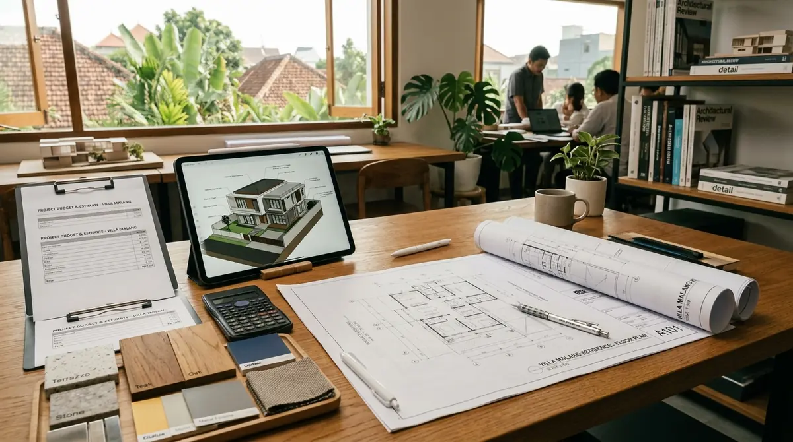

Ringkasan Inti
- Klojen sebagai kawasan pusat kota memiliki karakteristik harga lahan dan distribusi material yang relatif kompetitif.
- Biaya bangun rumah per m2 tetap terbagi ke dalam kelas sederhana, menengah, dan mewah sesuai spesifikasi material.
- Arsitek rumah mewah Malang berperan penting mengoptimalkan desain sesuai anggaran di kawasan padat seperti Klojen.
- Kontinjensi dan biaya perizinan tetap perlu dimasukkan dalam estimasi total anggaran proyek di kawasan ini.
Daftar Isi Artikel
Estimasi biaya bangun rumah per m2 di Klojen 2026 dipengaruhi lokasi strategis di pusat kota, kelas material, dan peran arsitek rumah mewah Malang dalam perencanaan.
Apa Saja Komponen yang Memengaruhi Biaya Bangun Rumah per m2 di Klojen?
Biaya bangun rumah per m2 di Klojen dipengaruhi oleh beberapa komponen utama, dengan karakteristik khusus sebagai kawasan pusat kota yang umumnya memiliki akses distribusi material lebih mudah dibanding daerah pinggiran.
Komponen utama yang memengaruhi estimasi biaya:
- Material struktural seperti pondasi, kolom, dan balok yang menjadi dasar kekuatan bangunan.
- Material dinding dan atap, termasuk pilihan antara bata ringan, bata merah, atau jenis penutup atap tertentu.
- Finishing interior dan eksterior yang disesuaikan dengan preferensi klien, mulai dari kelas standar hingga mewah.
- Biaya jasa arsitek dan kontraktor, termasuk pengawasan selama proses konstruksi berlangsung.
- Biaya perizinan seperti PBG yang perlu diperhitungkan sejak awal perencanaan anggaran.

Kenapa Biaya Bangun Rumah di Klojen Dapat Berbeda dari Wilayah Lain di Malang?
Biaya bangun rumah di Klojen dapat berbeda dari wilayah lain di Malang Raya karena posisinya sebagai kawasan pusat kota yang memiliki karakteristik lahan dan aksesibilitas yang relatif berbeda dari daerah pinggiran.
Faktor yang memengaruhi variasi biaya di Klojen:
- Harga lahan yang cenderung lebih tinggi di kawasan pusat kota dibanding daerah pinggiran seperti Kedungkandang atau Pakis.
- Aksesibilitas distribusi material yang umumnya lebih mudah karena dekat dengan pusat perdagangan material bangunan.
- Keterbatasan luas lahan di beberapa area Klojen yang dapat memengaruhi desain dan efisiensi ruang bangunan.
- Tingkat kompleksitas desain yang diinginkan klien, di mana rumah mewah dengan detail khusus membutuhkan anggaran lebih besar.
Catatan Arsitek Malang
Pada kawasan padat Klojen seperti Oro-Oro Dowo atau Kasin, optimalkan denah dengan konfigurasi split-level atau rumah tumbuh vertikal 2–3 lantai. Selain menghemat footprint tapak tanah yang mahal, rancangan DED yang presisi mencegah pembengkakan biaya bongkar-pasang struktur saat proyek berjalan.
Bagaimana Peran Arsitek Rumah Mewah dalam Mengendalikan Anggaran di Klojen?
Arsitek rumah mewah Malang berperan penting dalam mengoptimalkan desain rumah di kawasan Klojen, terutama mengingat keterbatasan luas lahan yang umum ditemukan di kawasan pusat kota ini.
Peran spesifik arsitek dalam pengendalian biaya di Klojen:
- Merancang denah yang efisien untuk memaksimalkan fungsi ruang meski berada pada lahan dengan luas terbatas.
- Menyusun RAB yang realistis sejak tahap awal berdasarkan karakteristik harga material dan lahan di kawasan pusat kota.
- Memberikan rekomendasi desain vertikal, seperti rumah bertingkat, untuk mengoptimalkan luas bangunan pada lahan terbatas.
- Melakukan pengawasan berkala untuk memastikan pelaksanaan konstruksi sesuai spesifikasi yang telah disepakati.
Apa Keuntungan Membangun Rumah Mewah di Kawasan Klojen?
Membangun rumah mewah di kawasan Klojen memiliki keuntungan tersendiri, terutama dari sisi aksesibilitas dan nilai strategis lokasi yang berada di pusat Kota Malang.
Keuntungan yang dapat dirasakan:
- Aksesibilitas yang tinggi ke berbagai fasilitas perkotaan seperti pusat perbelanjaan, sekolah, dan fasilitas kesehatan.
- Nilai investasi properti yang cenderung stabil karena lokasi strategis di kawasan pusat kota.
- Distribusi material yang lebih efisien karena dekat dengan pusat perdagangan bahan bangunan di Malang.
Estimasi biaya bangun rumah per m2 di Klojen Malang 2026 dipengaruhi oleh karakteristik lahan pusat kota, kelas material, dan peran arsitek rumah mewah Malang dalam optimasi desain. Melibatkan arsitek berpengalaman sejak tahap perencanaan membantu memastikan anggaran tetap terkendali meski dengan keterbatasan lahan yang umum ditemukan di kawasan Klojen.
FAQ Seputar Biaya Bangun Rumah di Klojen Malang
Apakah biaya bangun rumah mewah di Klojen lebih mahal dibanding kawasan pinggiran Malang?
Biaya dapat bervariasi, namun harga lahan yang lebih tinggi di Klojen umumnya menjadi faktor yang membedakan total investasi dibanding kawasan pinggiran.
Apakah lahan terbatas di Klojen menjadi kendala untuk desain rumah mewah?
Lahan terbatas dapat diatasi dengan desain vertikal yang efisien, dan arsitek berpengalaman dapat memaksimalkan fungsi ruang meski luas lahan tidak besar.
Bagaimana cara mendapatkan estimasi biaya yang lebih akurat untuk rumah mewah di Klojen?
Estimasi paling akurat diperoleh melalui konsultasi langsung dengan arsitek yang dapat meninjau kondisi lahan spesifik dan kebutuhan proyek secara detail.
Konsultasikan Pembangunan Rumah Mewah Anda di Klojen
Dapatkan estimasi RAB transparan, simulasi tata ruang lahan sempit, dan DED lengkap bersama arsitek IAI Arsitek Malang.

Naura Regyna Putri
Penulis & Tim Riset Arsitektur Maroon Arsitek Malang, spesialis perencanaan anggaran konstruksi (RAB), arsitektur rumah mewah perkotaan, dan pengurusan PBG/SIMBG.